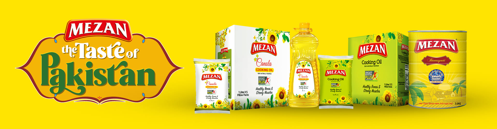

Mezan was established in the year 1951-1952 with the corporate name of “Paracha Textile Mills Limited”. The foundation stone was laid by the Excellency of Khawaja Nazimuddin, the Governor General of Pakistan. In 1983, the current management took over the Company and the board of directors carried the same vision forward of delivering the best quality of edible oil in a fairly new developing market in Pakistan. The Ghee Unit Batch refinery was established and started manufacturing different brands of Ghee and Cooking Oil, which include Mezan Canola Oil, Mezan Cooking Oil, Mezan Banaspati, Olivola, Dil Dil Banaspati and Cooking Oil, Paracha Banaspati and Cooking Oil, Awaz Banaspati and Cooking Oil and Mezan Perfect Fry etc.